<title>Pictures Round 7 Nov</title>
<meta name="claude:viewport-fit-sides" content="cover">
<style>
/* The same page as the matching-looks rounds, so they read as one series: numbered questions, each a short statement,
   a worked example, its pictures (today, then each drawn option), then the recommendation. Grouped by where he meets them. */
:root{
  --bg:#f3f5f7; --panel:#ffffff; --ink:#14181d; --ink-2:#4a5560; --edge:#d6dce2; --accent:#0e7fa3; --ring:#c77700; --tag:#e9eef2; --say:#fff4dc;
  --f-body:"Inter Tight","Segoe UI",system-ui,-apple-system,sans-serif; --f-head:"Barlow Condensed","Arial Narrow","Segoe UI",sans-serif;
}
@media (prefers-color-scheme: dark){:root:not([data-theme="light"]){--bg:#0d1014;--panel:#161b21;--ink:#e8edf2;--ink-2:#9aa7b3;--edge:#2a323b;--accent:#4cc3e6;--ring:#ffb020;--tag:#1f262e;--say:#2a2414;color-scheme:dark}}
:root[data-theme="dark"]{--bg:#0d1014;--panel:#161b21;--ink:#e8edf2;--ink-2:#9aa7b3;--edge:#2a323b;--accent:#4cc3e6;--ring:#ffb020;--tag:#1f262e;--say:#2a2414;color-scheme:dark}
body{background:var(--bg);color:var(--ink);font:15px/1.55 var(--f-body);padding-left:max(16px,env(safe-area-inset-left,0px));padding-right:max(16px,env(safe-area-inset-right,0px));padding-block:20px 48px;margin:0}
main{max-width:980px;margin:0 auto;display:flex;flex-direction:column;gap:28px}
h1{font:700 30px/1.1 var(--f-head);letter-spacing:.02em;text-transform:uppercase;margin:0;text-wrap:balance}
h2{font:700 22px/1.2 var(--f-head);letter-spacing:.02em;margin:0;text-wrap:balance;display:flex;gap:10px;align-items:baseline}
h2 .n{background:var(--ring);color:#000;border-radius:7px;padding:0 9px;font-size:18px}
h2.grp{font-size:15px;letter-spacing:.08em;text-transform:uppercase;color:var(--ink-2);margin:6px 0 -14px}
h3{font:700 15px/1.3 var(--f-body);margin:6px 0 0}
p{margin:0;max-width:68ch}
.lead{color:var(--ink-2)}
section{background:var(--panel);border:1px solid var(--edge);border-radius:14px;padding:18px max(16px,2vw);display:flex;flex-direction:column;gap:14px;min-width:0}
figure{margin:0;display:flex;flex-direction:column;gap:6px;min-width:0}
figure img{width:100%;height:auto;border-radius:8px;border:1px solid var(--edge);cursor:zoom-in;display:block}
figure.sm img{width:auto;max-width:100%}
figcaption{font-size:13px;color:var(--ink-2)}
.tag{display:inline-block;font:600 11px/1.6 var(--f-body);letter-spacing:.06em;text-transform:uppercase;background:var(--tag);border-radius:5px;padding:0 6px;margin-right:6px;color:var(--ink)}
.tag.drawn{background:var(--accent);color:var(--bg)}
.pair{display:grid;grid-template-columns:repeat(auto-fit,minmax(min(100%,300px),1fr));gap:12px;align-items:start}
.phones{display:grid;grid-template-columns:repeat(auto-fit,minmax(min(100%,180px),1fr));gap:12px;align-items:start}
.rec{background:var(--tag);border-radius:10px;padding:10px 12px;display:flex;flex-direction:column;gap:6px}
.rec b{color:var(--accent)}
.say{background:var(--say);border-radius:4px;padding:0 3px;box-decoration-break:clone;-webkit-box-decoration-break:clone}
.ex{margin:0}
ul,ol{margin:0;padding-left:22px;display:flex;flex-direction:column;gap:6px}
.top{border:2px solid var(--ring)}
.top a{color:var(--accent)}
.top h3{font-size:12px;letter-spacing:.08em;text-transform:uppercase;color:var(--ink-2);margin-top:4px}
.qs{list-style:none;padding:0;gap:8px}
.qs li{display:flex;gap:10px;align-items:baseline}
.qs .qn{flex:none;min-width:28px;text-align:center;background:var(--ring);color:#000;border-radius:6px;font:700 15px/1.6 var(--f-head);text-decoration:none}
.qs .qn:focus-visible,.top a:focus-visible{outline:2px solid var(--accent);outline-offset:2px}
.zoom{position:fixed;inset:0;background:rgba(0,0,0,.88);display:flex;align-items:center;justify-content:center;z-index:20;padding:env(safe-area-inset-top,0px) max(8px,env(safe-area-inset-right,0px)) env(safe-area-inset-bottom,0px) max(8px,env(safe-area-inset-left,0px));overflow:auto;cursor:zoom-out}
.zoom img{max-width:none;width:min(1600px,200vw);height:auto}
@media (max-width:600px){.zoom img{width:220vw}}
</style>

<main>
  <header style="display:flex;flex-direction:column;gap:10px">
    <h1>Pictures round, 7 Nov</h1>
    <p class="lead">Fourteen small questions the backlog kept for you, each drawn on the real app overnight. Nothing in the app is changed: each waits for your answer.</p>
    <p class="lead">In every picture the amber ring marks the place and its tag names it. <span class="tag">Today</span> is the app as it is. <span class="tag drawn">Drawn</span> is a change drawn on the running app, nothing saved. Tap any picture to enlarge it. The pictures come from a test browser, not your iPhone: it cannot raise the keyboard, its letters are slightly narrower than an iPhone's, and it draws 👁 as a plain mark. Where that matters, the caption says so.</p>
  </header>

  <section class="top">
    <h2>Your questions</h2>
    <h3>The Scheduler Board</h3>
    <ul class="qs">
      <li><a class="qn" href="#q1">1</a><span>The board on a phone on its side, keys up: the top keeps over a third of the screen. <b>Recommended: B, the title and day strip scroll away, the bar stays.</b></span></li>
      <li><a class="qn" href="#q2">2</a><span>The board 821 to 1000 wide: each line very tall, remarks squeezed or cut off. <b>Recommended: C, the remarks on a row of their own and the times stacked as on a phone.</b></span></li>
      <li><a class="qn" href="#q3">3</a><span>OIL Earn's day switch: "Nothing today earns" reads like a statement. <b>Recommended: A, the app's own switch, "No OIL earned".</b></span></li>
      <li><a class="qn" href="#q4">4</a><span>A tap on a puck that cannot earn says nothing. <b>Recommended: A, the passing note says why and nothing is picked.</b> You can answer 3 and 4 together.</span></li>
    </ul>
    <h3>The schedule and Logic</h3>
    <ul class="qs">
      <li><a class="qn" href="#q5">5</a><span>A waiting mark on Unavailable: leave filed on a published day shows no mark. <b>Recommended: A, the same dotted mark the Ground Programme wears.</b></span></li>
      <li><a class="qn" href="#q6">6</a><span>A week that cannot be read: the words blame an older version of the app. <b>Recommended: A, say what happened, that nothing is lost, and to report it.</b></span></li>
      <li><a class="qn" href="#q7">7</a><span>Where a day starts when nothing is entered. <b>Recommended: A, the long day and Insights hours start at the default rally, as OIL does.</b></span></li>
    </ul>
    <h3>The Inputs list</h3>
    <ul class="qs">
      <li><a class="qn" href="#q8">8</a><span>+ Input on the right, on a desktop. <b>Recommended: A, move it, as "+ Medical".</b></span></li>
    </ul>
    <h3>The Leave War</h3>
    <ul class="qs">
      <li><a class="qn" href="#q9">9</a><span>More names below: the look of "↓ 8 more" in the day window. <b>Recommended: A, the bell's own grey line.</b></span></li>
      <li><a class="qn" href="#q10">10</a><span>The dates row blink when the grid scrolls. <b>Recommended: A, fix it, with a speed check.</b></span></li>
    </ul>
    <h3>The Tracker</h3>
    <ul class="qs">
      <li><a class="qn" href="#q11">11</a><span>The Tracker's marking pop-up covers the bars on a phone. <b>Recommended: A, the chart slides the event up and the window opens whole below it.</b></span></li>
      <li><a class="qn" href="#q12">12</a><span>The Tracker's Find ✕ only empties the box. <b>Recommended: A, one ✕ empties it and puts Find away.</b></span></li>
    </ul>
    <h3>The typed marks</h3>
    <ul class="qs">
      <li><a class="qn" href="#q13">13</a><span>The last typed marks: 👁, ⤢ / ⤡, ↺ Restore, a hidden warning's ↺. <b>Recommended: A, all four as drawn.</b></span></li>
      <li><a class="qn" href="#q14">14</a><span>The phone day bar's marks on Templates and OIL Earn. <b>Recommended: A, the desktop's marks on the phone too.</b></span></li>
    </ul>
    <p>"All as recommended" answers every one. Nothing is changed in the app until you answer.</p>
    <p>Two letters on one Leave War day: already fixed by your 6 Nov pick, the codes now turned on their side. Nothing to ask.</p>
  </section>

  <h2 class="grp">The Scheduler Board</h2>

  <section id="q1">
    <h2><span class="n">1</span>The board on a phone on its side, keys up</h2>
    <p>With your phone on its side and the keyboard up, how should the Scheduler Board's top give the list room? Today the top keeps 146 px of the 402, over a third of the screen, and the list gets a 56 px strip, under a third of one line. Since your 19 Oct rulings a tapped box does rise into that strip and can be typed in; you just see nothing above or below it.</p>
    <p class="ex"><b>For example:</b> hold your phone on its side on the board, Mon 13 Jul, and tap the first VL line's landing time (14:05) to change it. Today the keys come up and the top keeps its 146 px: you see that line's one row of boxes in a 56 px strip. With B, the title and day strip scroll away as the box rises, and the bar with Undo and Done stays at the top. 151 px of the list is in view: the line's boxes whole, with the empty top of its own 189 px line above them. The lines before and after come into view only once question 2 shortens the line (its C makes it 111 px).</p>
    <div class="pair">
      <figure>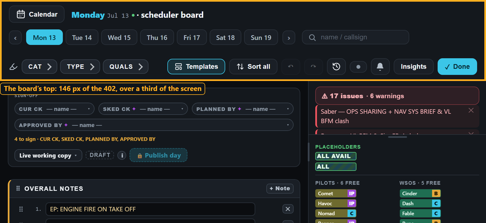<figcaption><span class="tag">Today</span>No keys: the board's top takes 146 px of the 402</figcaption></figure>
      <figure>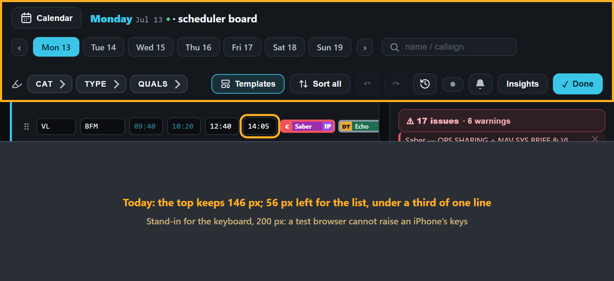<figcaption><span class="tag">Today</span>Keys up: 56 px left for the list. The dark block stands in for the keyboard: a test browser cannot raise an iPhone's</figcaption></figure>
      <figure>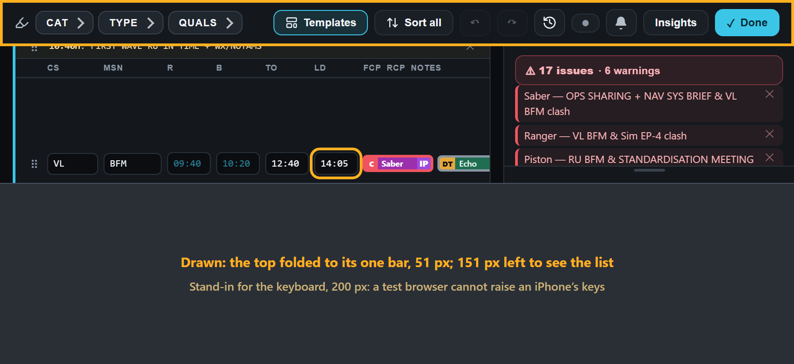<figcaption><span class="tag drawn">Drawn A and B</span>Keys up, the same picture for both: the top down to its one bar, 51 px; 151 px for the list. Keyboard a stand-in</figcaption></figure>
      <figure>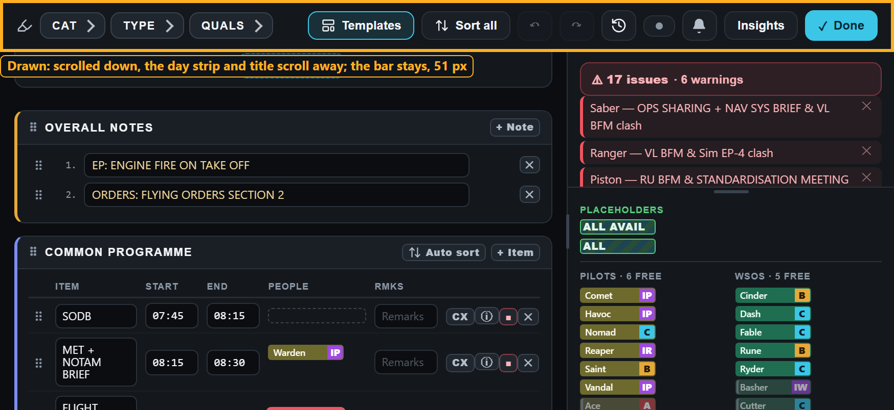<figcaption><span class="tag drawn">Drawn B</span>No keys, scrolled down: the title and day strip have scrolled away; the bar stays</figcaption></figure>
    </div>
    <ul>
      <li><b>A, fold only while the keys are up.</b> When the keyboard opens, Calendar, the title, the day strip and search fold away and the bar alone stays: 151 px for the list instead of 56. The cost: as the keys rise, the list jumps up 95 px under your finger, unless the fold moves in step with the keys, which is the hard and fragile part.</li>
      <li><b>B, the title and day strip scroll with the list; the bar stays.</b> At the top of the board nothing changes. Scroll down, or tap a box low on the screen with the keys up, and Calendar, the title, the day strip and search scroll away like any page, while the bar (the highlight chips, Templates, Sort all, Undo, Redo, History, sync, the bell, Insights, Done) stays, 51 px. Keys up: 151 px for the list, and nothing moved when the keys opened. The cost: to change day, jump to a date or search, scroll back to the top first.</li>
      <li><b>C, leave it.</b> A tapped box always rises into view now, and you type with one line's boxes in sight. Typing on the board with the phone on its side is rare: you said the phone is for minor changes (13 Oct 26).</li>
    </ul>
    <p>No new words in any. A still picture cannot show motion: A's jump and B's scrolling away are drawn at their end.</p>
    <div class="rec">
      <p><b>Recommended: B.</b> It gives the list the room with nothing jumping when the keys open, and it behaves the same with the keys up or down, as an ordinary page does: what is not needed scrolls away, and the bar you act from stays. A gets the same room only by moving the screen at the worst moment, and a fold that watches the keyboard is one more moving part to break. C leaves a 56 px strip. Worth a look on your iPhone once built, since the real keyboard could not be raised here.</p>
      <p>Rulings: B changes none. It keeps your rulings that a tapped box rises just above the keys and nothing else on screen jumps (19 Oct 26 and 27 Oct 26, D1048, D1081, D1412). My reading: it follows your rule that a phone on its side gets one row of bar at the top (4 Nov 26, D1643), though that rule is about the app's own top bar. A goes against the 19 and 27 Oct rulings unless the fold moves in step with the keys.</p>
    </div>
  </section>

  <section id="q2">
    <h2><span class="n">2</span>The board 821 to 1000 wide</h2>
    <p>On a narrow desktop window, a phone on its side (874 wide) and an upright iPad, each jet's line on the board is very tall and its remarks are squeezed or cut off. Which fix should it get? It is worse than the backlog said: each line is 189 px tall up to 1000 wide and stays cramped up to 1080; below about 950 the back seat, the remarks or the line's buttons sit past the panel's edge, out of reach. From 1100 wide it is fine: 65 px tall, remarks 92 px. Its C also shortens the line question 1 is about (189 to 111 px at 874 wide), but does not solve question 1 on its own.</p>
    <p class="ex"><b>For example:</b> open the board on your phone held on its side (874 wide), Mon 13 Jul, the first VL line (Saber in front, Echo in back, remarks "1B: BFM-6"). Today the line is 189 px tall, and Echo, the remarks and the line's buttons (CX, the red box, +, ✕) are past the panel's edge, out of reach. With C the line is 111 px: R over B and TO over LD, both seats in view, the remarks 355 px wide on their own row with the buttons beside them.</p>
    <div class="pair">
      <figure>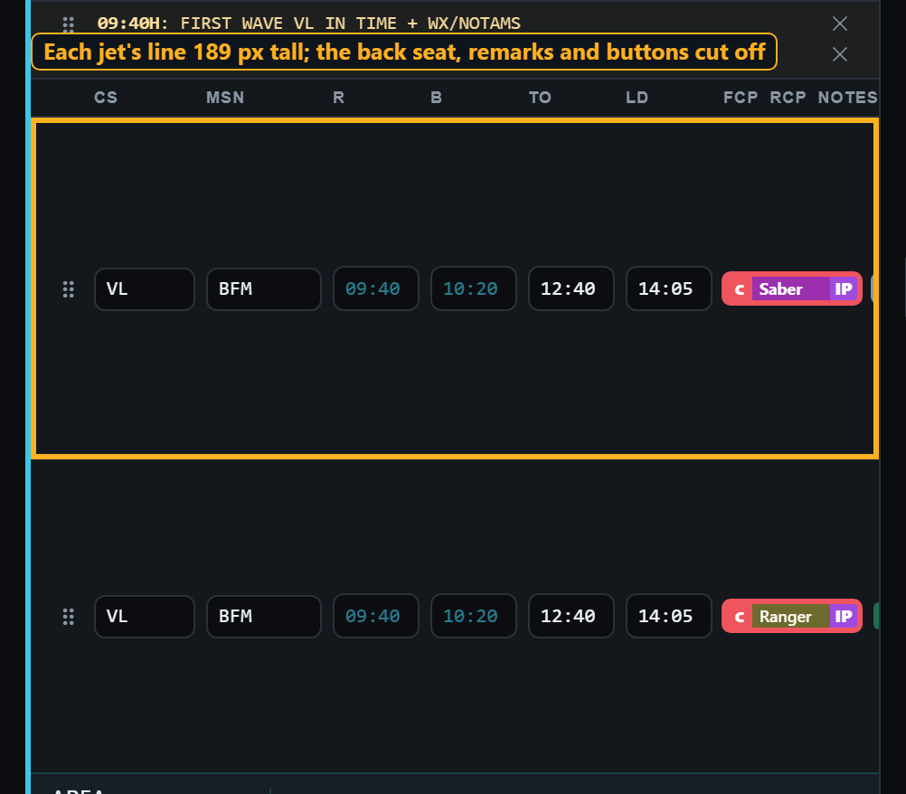<figcaption><span class="tag">Today</span>821 wide: 189 px tall; the back seat, remarks and buttons cut off</figcaption></figure>
      <figure>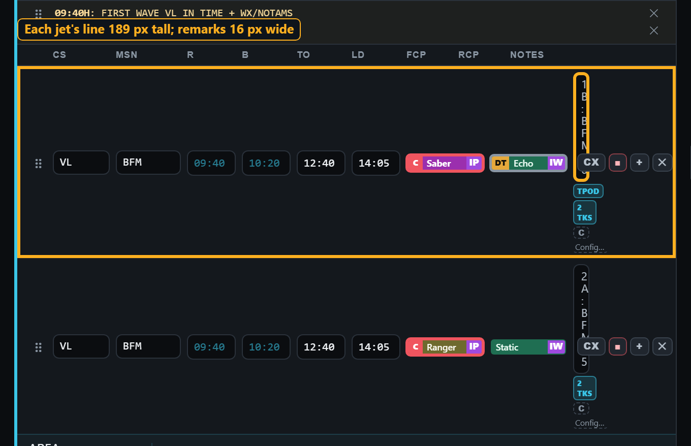<figcaption><span class="tag">Today</span>1000 wide: 189 px tall, remarks 16 px wide</figcaption></figure>
      <figure>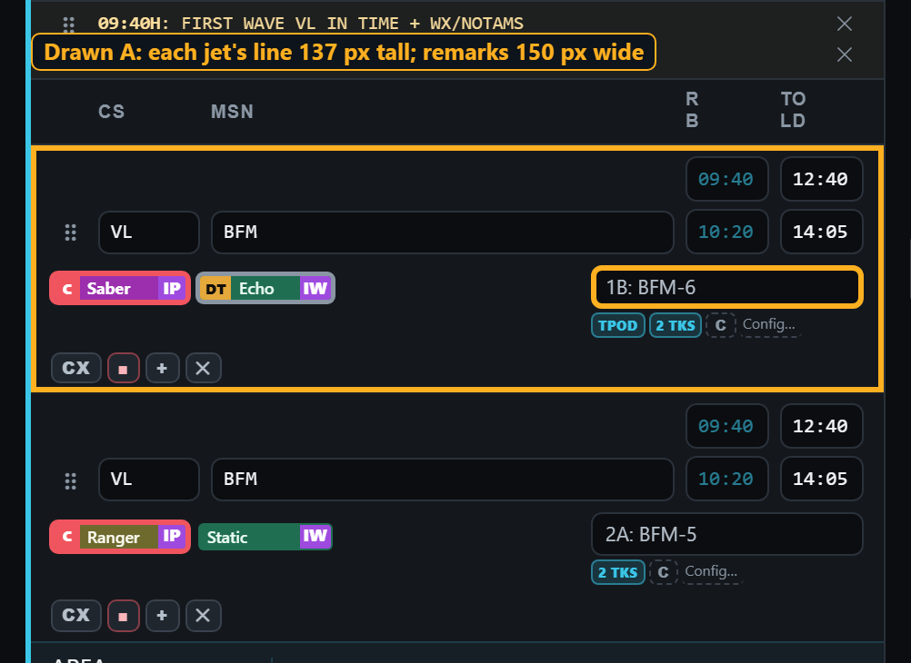<figcaption><span class="tag drawn">Drawn A</span>821 wide: the phone's own line, 137 px, remarks 150 px</figcaption></figure>
      <figure>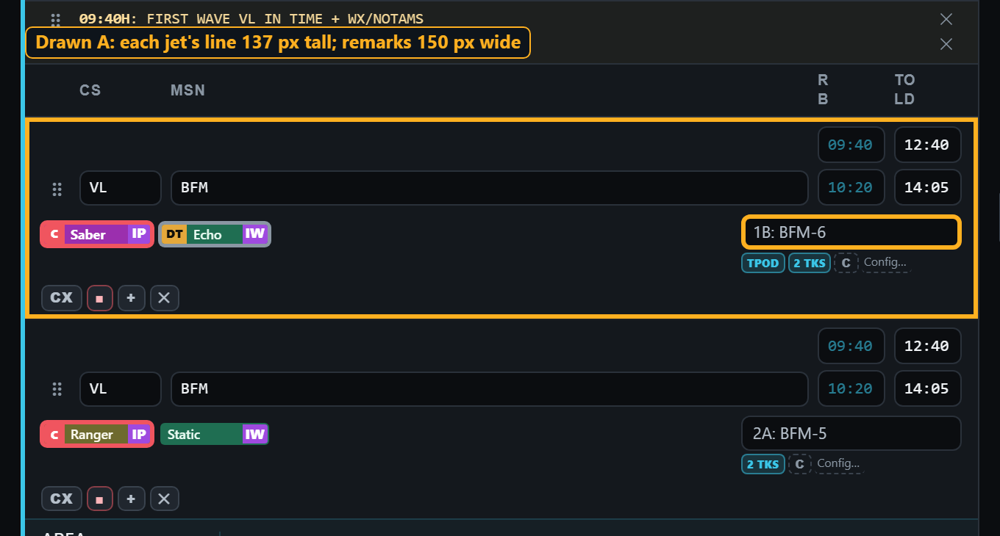<figcaption><span class="tag drawn">Drawn A</span>1000 wide: the same, 137 px</figcaption></figure>
      <figure>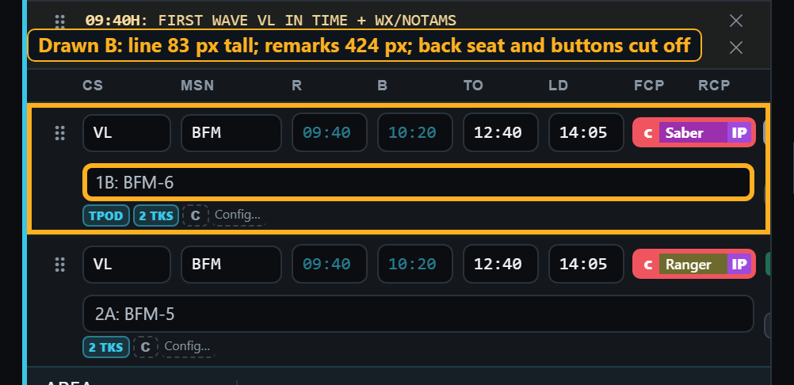<figcaption><span class="tag drawn">Drawn B</span>821 wide: 83 px, but the back seat and buttons still cut off</figcaption></figure>
      <figure>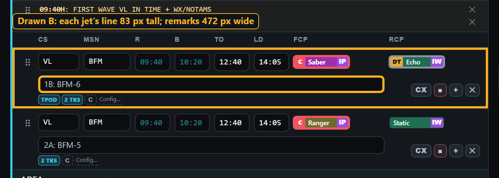<figcaption><span class="tag drawn">Drawn B</span>1000 wide: 83 px, everything in view</figcaption></figure>
      <figure>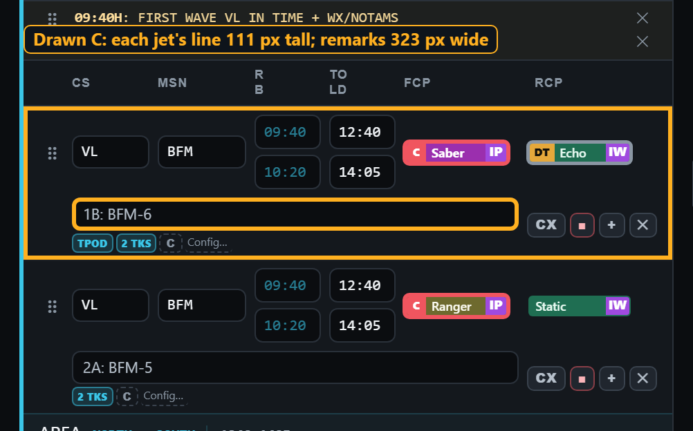<figcaption><span class="tag drawn">Drawn C</span>821 wide: 111 px, everything in view, remarks 323 px</figcaption></figure>
      <figure>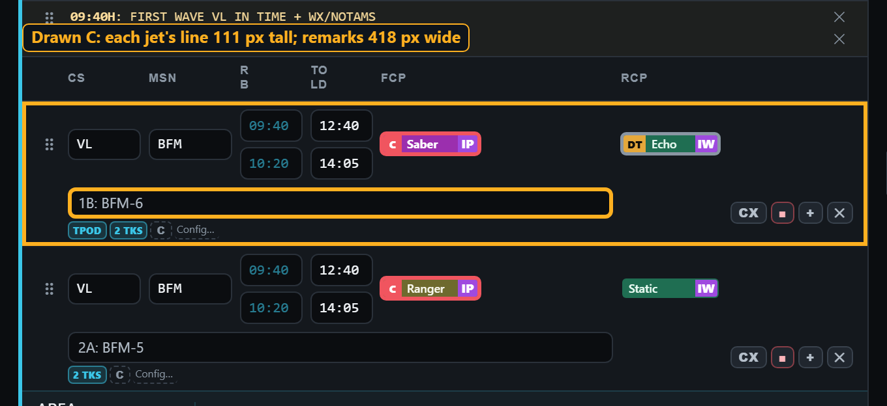<figcaption><span class="tag drawn">Drawn C</span>1000 wide: 111 px, remarks 418 px</figcaption></figure>
    </div>
    <p class="lead">Today at 900 and 1100 wide is pictured too, kept in the project.</p>
    <ul>
      <li><b>A, the phone's own line.</b> 137 px at every width, remarks 150 px. The mission box stretches wide, R over B and TO over LD at the right, the two seats on a row under it with the remarks beside, the buttons at the foot. Everything in view, but it puts a phone layout on a desktop.</li>
      <li><b>B, the remarks and the line's buttons take a row of their own; the times stay in one line.</b> 83 px, remarks 424 to 522 px. But from 821 to 900 the six times and two seats still do not fit: the back seat and the buttons stay cut off (89 px over at 821, 36 at 874, 10 at 900). Fine from about 950.</li>
      <li><b>C, B with R over B and TO over LD, as on a phone.</b> 111 px; remarks 323 px at 821, 355 at 874, 418 at 1000, 468 at 1099; everything in view at every width. The headings stack the same way.</li>
    </ul>
    <p>Each applies from 821 to 1099 wide only; from 1100 up the board stays as today. No new words in any.</p>
    <div class="rec">
      <p><b>Recommended: C.</b> It is the only option with every part of the line in reach at every width in the range, a phone on its side included; it gives the remarks real room, over 300 px everywhere; and it uses the stacked times the app already draws on a phone, so there is one stacked look, used wherever room runs short. B keeps the times in one line but still cuts off the back seat and buttons on the narrowest screens; A spends height on a layout made for a phone. One cost: at 1080 to 1099 wide today's line is already 65 px tall, and C makes it 111 px there, for remarks of about 460 px instead of 72 to 91 (where "1B: BFM-6" is cut).</p>
      <p>Rulings: C and A change your rule that the desktop board keeps each line's times in one line (19 Oct 26, D1029), and the same point in your rally-box ruling of that day (D1026), for 821 to 1099 wide only. B changes none.</p>
    </div>
  </section>

  <section id="q3">
    <h2><span class="n">3</span>OIL Earn's day switch</h2>
    <p>In OIL Earn, the day's button "Nothing today earns" reads like the app saying nobody earns, even while a man plainly earns under it. Should it become a real switch, a button whose words say what it does, or the design guide's own on/off button? Today it keeps the same words in both states; pressed, it fills amber. Only its hover words change, and a phone has no hover. The app's own words already call it a switch.</p>
    <p>You can answer 3 and 4 together: both are OIL Earn on the board, drawn on the same Saturday, and neither answer depends on the other.</p>
    <p class="ex"><b>For example:</b> Sat 18 Jul, OIL Earn on: Fable on the SDO desk earns FO. Today the bar shows a button "Nothing today earns" right above Fable's FO, as if the app contradicted itself. With A the bar shows a switch, off, <span class="say">“No OIL earned”</span>, and Fable's FO stands. Switch it on: the switch lights, the note says <span class="say">“Nothing on this day earns OIL. Turn off the switch and each man earns as he did before.”</span>, and a tap on Fable says "Nothing on this day earns. Turn off the switch first."</p>
    <div class="phones">
      <figure>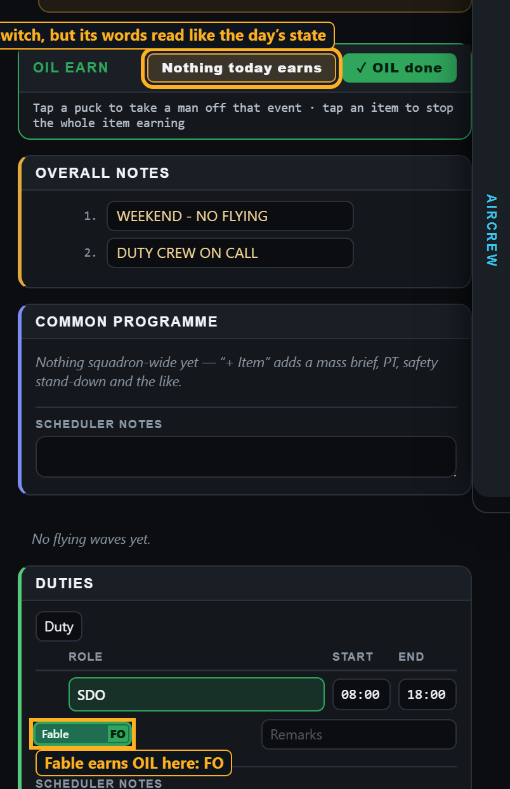<figcaption><span class="tag">Today</span>Off: a button that reads like the day's state</figcaption></figure>
      <figure>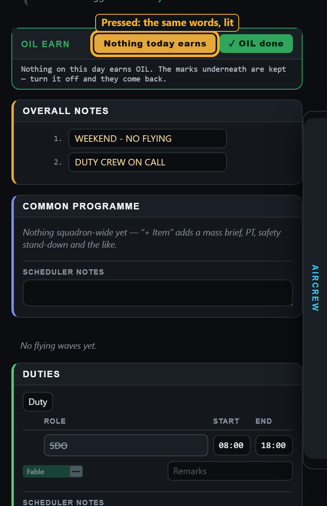<figcaption><span class="tag">Today</span>Pressed: the same words, lit amber</figcaption></figure>
      <figure>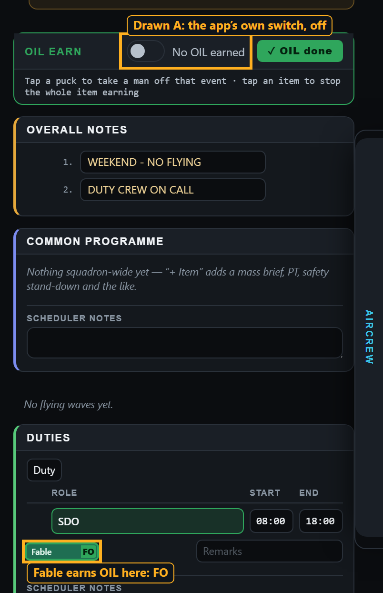<figcaption><span class="tag drawn">Drawn A</span>The app's own switch, off</figcaption></figure>
      <figure>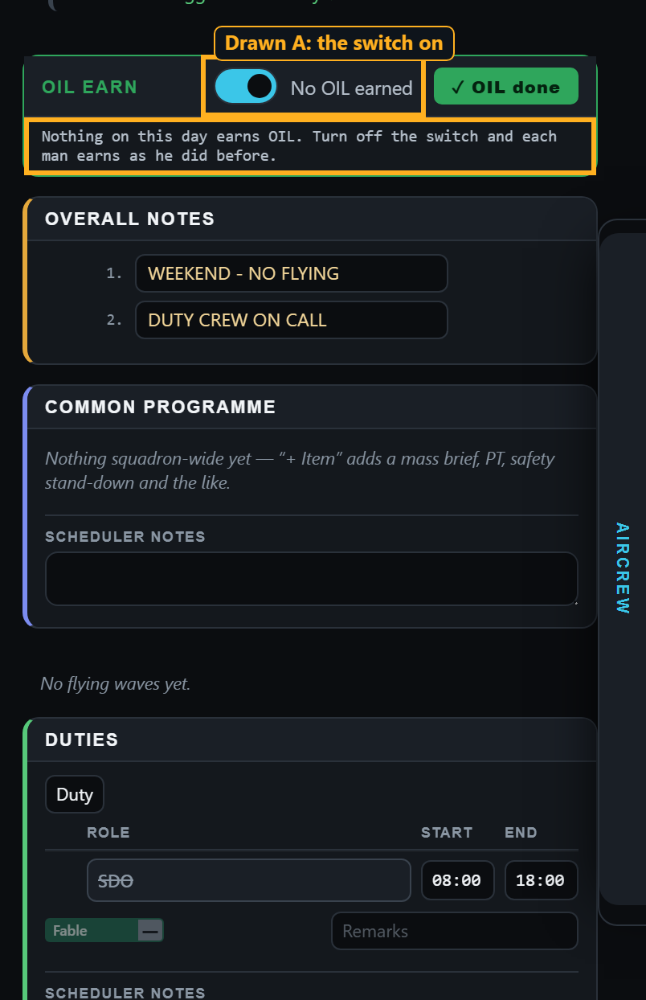<figcaption><span class="tag drawn">Drawn A</span>On: the switch lit, the new note ringed</figcaption></figure>
      <figure>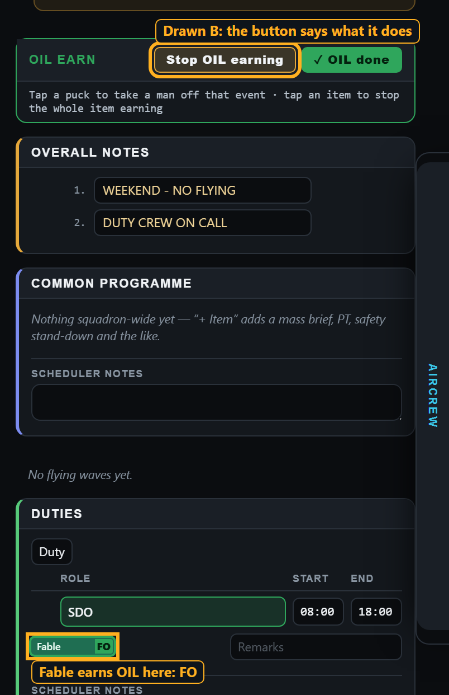<figcaption><span class="tag drawn">Drawn B</span>At rest: the button says what it does</figcaption></figure>
      <figure>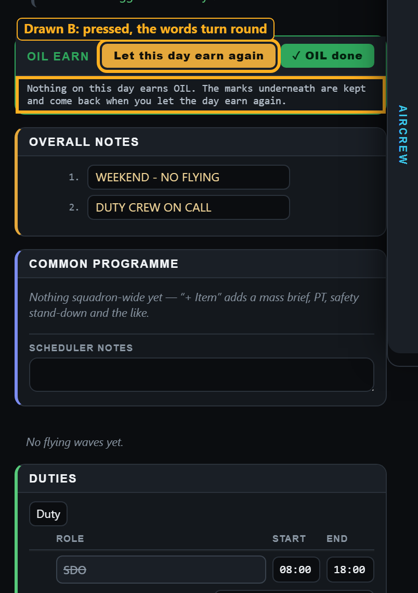<figcaption><span class="tag drawn">Drawn B</span>Pressed: the words turn round</figcaption></figure>
      <figure>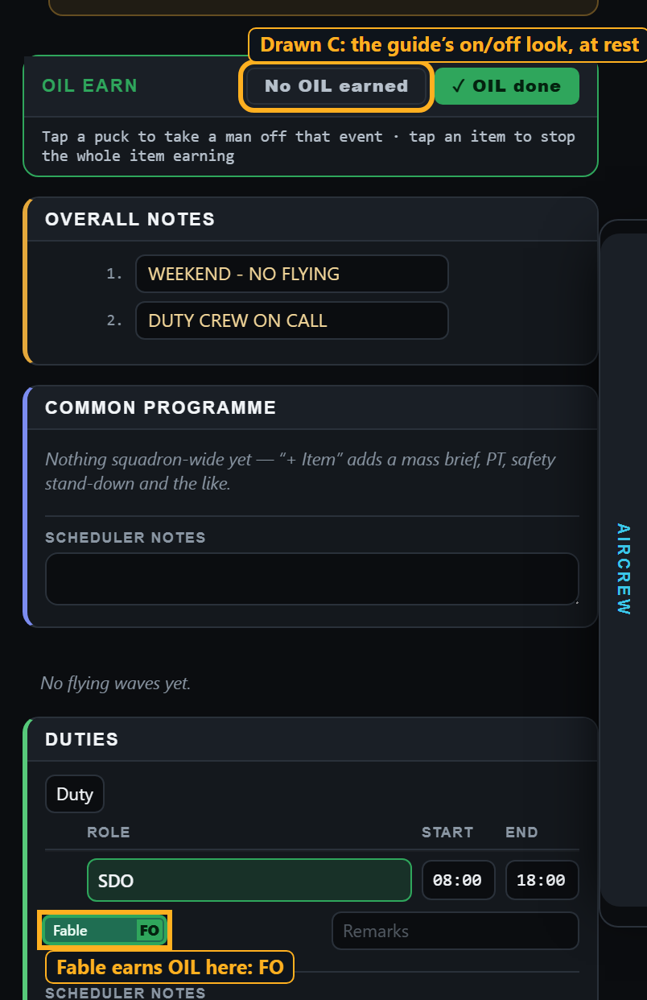<figcaption><span class="tag drawn">Drawn C</span>At rest: the guide's on/off look</figcaption></figure>
      <figure>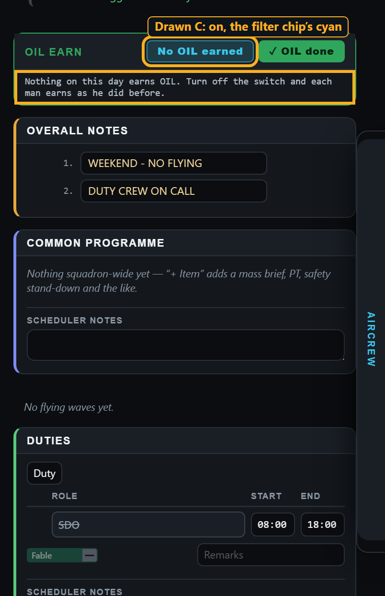<figcaption><span class="tag drawn">Drawn C</span>On: the filter chip's cyan</figcaption></figure>
    </div>
    <p class="lead">Each was measured again with an iPhone's wider letters, which a test browser cannot draw: all three fit on one row in both states. The same eight on your PC, and B pressed in iPhone-wide letters, are kept in the project.</p>
    <ul>
      <li><b>A, the app's own switch</b>, as on the Logic page: a small slider and its words, <span class="say">“No OIL earned”</span>. Off, the slider is grey; on, it lights in the switch's cyan. Hover: <span class="say">“Anything added to this day later earns no OIL either.”</span> The note under the bar when on: <span class="say">“Nothing on this day earns OIL. Turn off the switch and each man earns as he did before.”</span> A tap on a man while it is on keeps your own words exactly: "Nothing on this day earns. Turn off the switch first." Room left on the phone's row: 12 px with an iPhone's letters.</li>
      <li><b>B, a button whose words say what it does, and turn round when pressed.</b> At rest <span class="say">“Stop OIL earning”</span>; pressed, lit amber as today, <span class="say">“Earn OIL again”</span>. The note when on: <span class="say">“Nothing on this day earns OIL. Press "Earn OIL again" and each man earns as he did before.”</span> Your refusal words no longer fit, as there is no switch, so a tap on a man would say <span class="say">“Nothing on this day earns. Press "Earn OIL again" first.”</span> Room with an iPhone's letters: 13 px at rest, 27 px pressed.</li>
      <li><b>C, the design guide's own on/off look</b> (the one the Leave War's Show SANS and Rearrange wear): the bar's button reading <span class="say">“No OIL earned”</span>, with A's hover and note. Plain grey at rest; on, the filter chip's pale cyan fill, cyan words and cyan edge. Room with an iPhone's letters: 31 px.</li>
    </ul>
    <p>Today's note under the bar ("Nothing on this day earns OIL. The marks underneath are kept — turn it off and they come back.") changes in every option.</p>
    <div class="rec">
      <p><b>Recommended: A.</b> A switch shows by its look whether it is on, so its words only have to say what on does. Your own refusal words, the bar's note and the people who tested it already call it a switch, so A makes the screen match the words. B fixes the misreading with words that flip at every press, so they must be kept in step in three more places (a man's puck, an event's OIL mark, the ALL AVAIL window), and it changes your own refusal words. C is the guide's default, but at rest it is a grey box reading "No OIL earned", a statement, which is the very way today's button is misread.</p>
      <p>Rulings: A and C keep your refusal words "Nothing on this day earns. Turn off the switch first." (14 Oct 26, D845); the name "Nothing today earns" switch in your 14 Oct rulings (D844, D845) changes to the new label. A's lit colour goes from amber to the switch's cyan, which departs twice from the design guide's colour rules: that a new on/off control takes the filter chip's look (your 15 Oct 26 approval, D882), and that OIL Earn's on looks stay as they are. Both are your call. B changes your refusal words of 14 Oct 26 (D844, D845).</p>
    </div>
  </section>

  <section id="q4">
    <h2><span class="n">4</span>A tap on a puck that cannot earn</h2>
    <p>In OIL Earn, when you tap a man's puck that cannot earn on that row, should the app say why at the foot of the screen, instead of picking him? Today a tap picks him (his puck and his name in the crew list light blue) and nothing says why; on a PC the reason shows only on hover. You ruled that a seat with nothing to measure "says why instead" (22 Sep 26), and that in OIL Earn a tap on a man in the ALL AVAIL window selects nothing (23 Sep 26). You can answer this together with 3.</p>
    <p class="ex"><b>For example:</b> Sat 18 Jul, the SDO desk has a start of 08:00 and no end time, Fable on it. In OIL Earn you tap Fable on your phone. Today he lights blue and nothing says why; the reason shows only when a mouse rests on his puck on a PC, so on your phone you never see it. With A, nothing is picked and the note at the foot says <span class="say">“Nothing changed for Fable. No OIL worked out — this row has no end time.”</span></p>
    <div class="phones">
      <figure>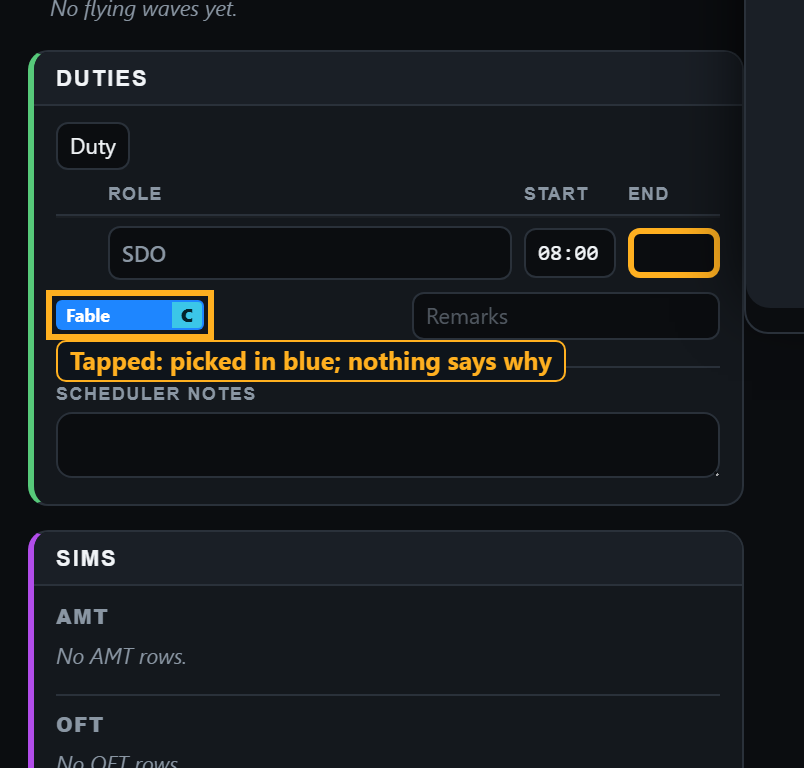<figcaption><span class="tag">Today</span>Tapped: picked in blue; nothing says why</figcaption></figure>
      <figure>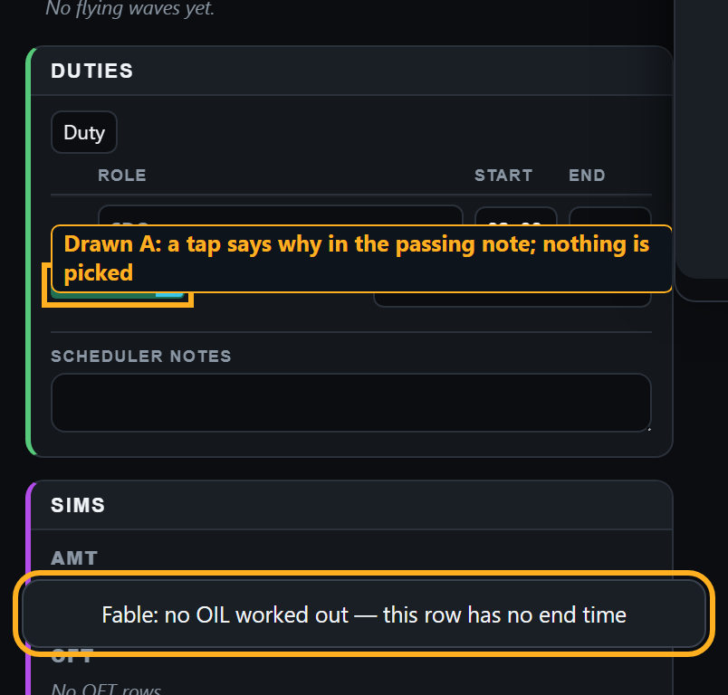<figcaption><span class="tag drawn">Drawn A</span>A tap says why; nothing is picked</figcaption></figure>
      <figure>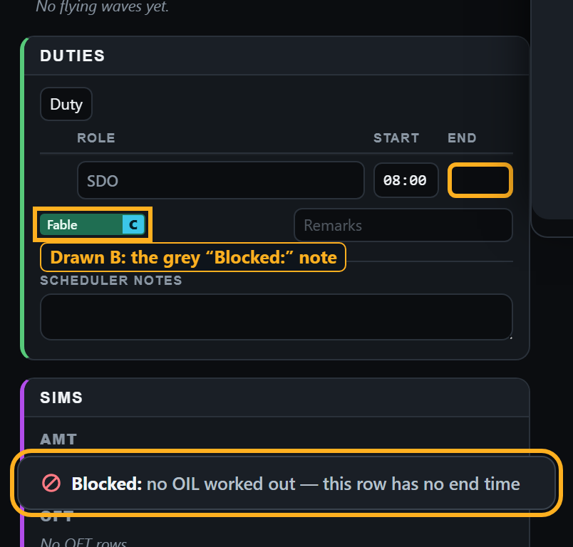<figcaption><span class="tag drawn">Drawn B</span>The grey "Blocked:" note</figcaption></figure>
    </div>
    <div class="pair">
      <figure>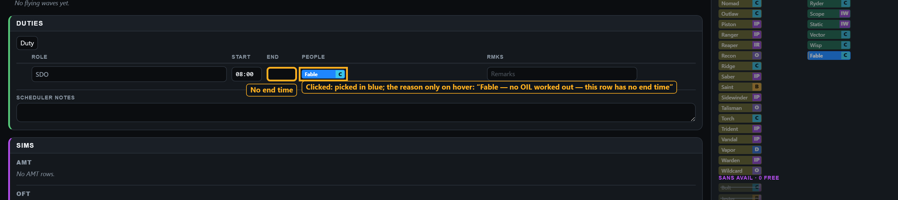<figcaption><span class="tag">Today</span>Your PC: picked in blue; the reason only on hover</figcaption></figure>
      <figure>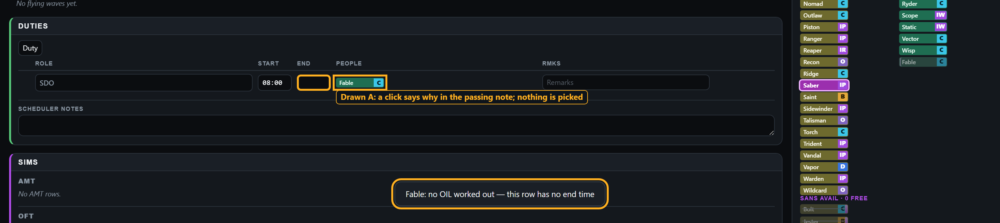<figcaption><span class="tag drawn">Drawn A</span>Your PC: a click says why in the passing note</figcaption></figure>
      <figure>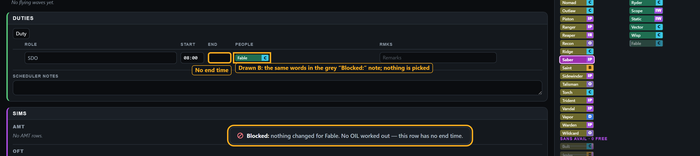<figcaption><span class="tag drawn">Drawn B</span>Your PC: the grey note; nothing is picked</figcaption></figure>
    </div>
    <p>In both options the tap picks nothing, and the tap targets stay as they are (your 22 Sep 26 ruling).</p>
    <ul>
      <li><b>A, the app's passing note:</b> <span class="say">“Nothing changed for Fable. No OIL worked out — this row has no end time.”</span> First what the tap did, with the man as its subject; then your sentence, whole. Other reasons take the same shape, for example <span class="say">“Nothing changed for Fable. This row gives him no working hours to count OIL from.”</span> in place of "nothing measurable to earn from here" (written, not pictured: Saturday's puck is the no-end-time case).</li>
      <li><b>B, the grey "Blocked:" note</b> with the red no-entry sign: <span class="say">“Blocked: nothing changed for Fable. No OIL worked out — this row has no end time.”</span> But "Blocked:" is for a change refused, and this tap is not a change. The mode's own refusals ("Nothing on this day earns. Turn off the switch first.", "This event earns nobody any OIL. Turn the event back on first.") are plain notes today, so B makes the mode say things two ways unless they all go grey together.</li>
    </ul>
    <p><b>Your words kept despite a reader's catch:</b> "No OIL worked out — this row has no end time" is your wording (28 Sep 26), so it stays. A fresh reader, given the words alone, took "No OIL worked out" two ways (no OIL could be counted, or he worked no OIL), and a design reviewer flagged its dash. If you want it changed, the plain form is <span class="say">“Fable earns no OIL here: this row has no end time.”</span>, and the hover and the ALL AVAIL window would change with it, so all three say one sentence.</p>
    <div class="rec">
      <p><b>Recommended: A.</b> The tap asks "why not him?", it is not trying a change, so the plain note answers it, in the same look as the mode's other notes. It names the man, which matters on a row of several; it says first that the tap changed nothing; and it ends with the sentence the PC already shows on hover. B is right only if you want every refusal in the mode grey, which is a wider change.</p>
      <p>Rulings: A changes none. It does what your 22 Sep 26 ruling asks (a seat with nothing to measure says why, D31) and carries your 23 Sep 26 rule from the ALL AVAIL window to the board (a tap in OIL Earn selects nothing, D65). B changes none either, but stretches your "Blocked:" rules of 5 and 6 Nov 26 (D1667, D1668) to something that is not a change.</p>
    </div>
  </section>

  <h2 class="grp">The schedule and Logic</h2>

  <section id="q5">
    <h2><span class="n">5</span>A waiting mark on Unavailable</h2>
    <p>When someone files leave, or anything that lands under Unavailable, on a day already published, should its row on the Unavailable list wear the same dotted "waiting to go out" mark that a Ground Programme row filed the same way wears? Today, Wed 15 Jul published, then LL for Bolt and a Meeting for Saint filed: the day reads "2 pending". The Meeting's name is underlined in dotted cyan; Bolt's LL has no mark at all, on the week, the board and the phone. So the day says "2 pending" and you can find only one.</p>
    <p class="ex"><b>For example:</b> Bolt files LL for Wed 15 Jul after Saber has published it. Today the day reads "1 pending", the four sign-offs fall, and Bolt's LL row on the Unavailable list looks exactly as it did before anything changed. With A the LL on that row is underlined in dotted cyan (on the board, its box outlined dotted) until AL1 goes out, then plain again.</p>
    <div class="pair">
      <figure>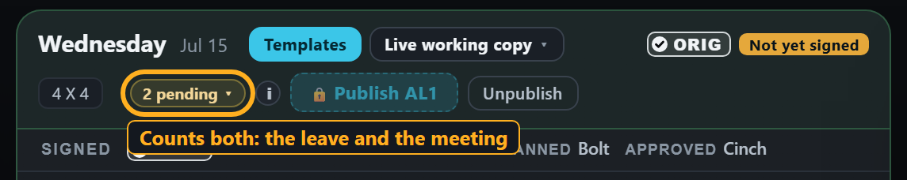<figcaption><span class="tag">Today</span>The day's head: "2 pending"</figcaption></figure>
      <figure>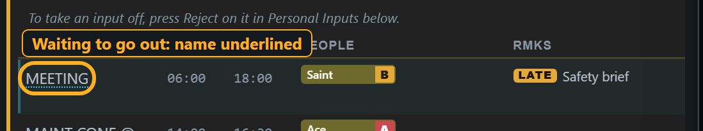<figcaption><span class="tag">Today</span>The Meeting on the Ground Programme: its name underlined as waiting</figcaption></figure>
      <figure>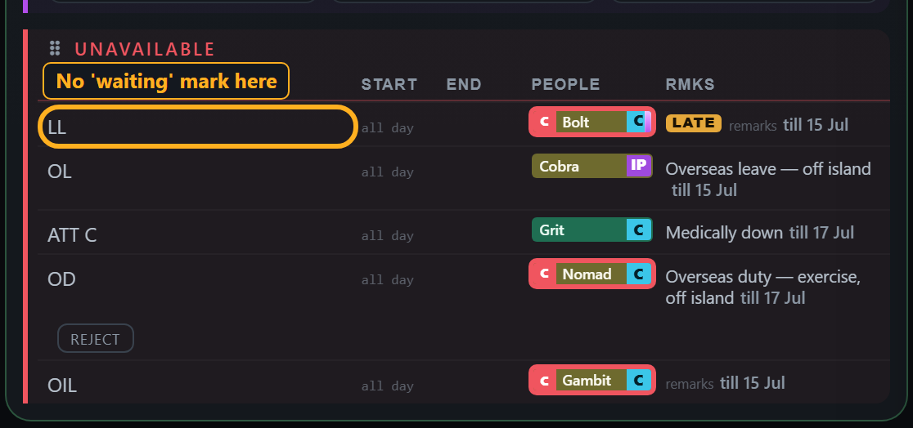<figcaption><span class="tag">Today</span>Bolt's LL on Unavailable: no mark</figcaption></figure>
      <figure>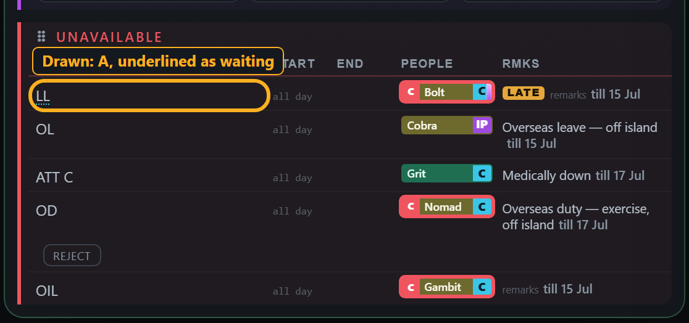<figcaption><span class="tag drawn">Drawn A</span>The LL underlined in the same dotted cyan</figcaption></figure>
      <figure>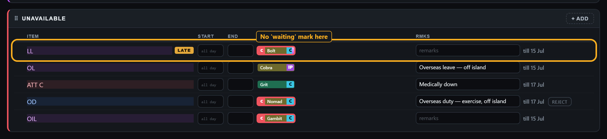<figcaption><span class="tag">Today</span>Scheduler Board: the LL row, no mark</figcaption></figure>
      <figure>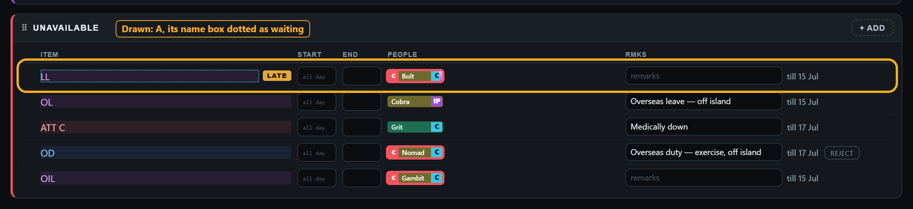<figcaption><span class="tag drawn">Drawn A</span>Scheduler Board: the LL's box outlined dotted, as the Meeting's is</figcaption></figure>
      <figure>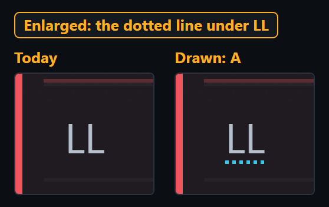<figcaption><span class="tag drawn">Enlarged</span>Your PC: the LL alone, today and A side by side</figcaption></figure>
      <figure>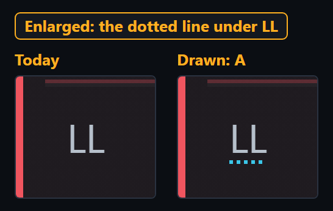<figcaption><span class="tag drawn">Enlarged</span>Your phone: the LL alone, today and A side by side</figcaption></figure>
    </div>
    <p class="lead">The phone's whole pictures (today and A), and the board's Meeting, are kept in the project.</p>
    <ul>
      <li><b>A, the same mark.</b> The Unavailable row of an input filed, changed or moved after publishing wears the mark a Ground Programme row wears: on the week its name underlined dotted in the amendment's colour; on the board its name box outlined dotted. No new words, no new look. It goes when the day's next amendment goes out, as every other one does. On a two-letter name like "LL" the mark is small, a dotted line about as wide as the two letters, so the today and A pictures look nearly alike at their size; the enlarged pictures show it. On the board the dotted box runs the whole name box, so it shows plainly.</li>
      <li><b>B, leave it.</b> The day's count and the changes window stay the only way to find it.</li>
    </ul>
    <div class="rec">
      <p><b>Recommended: A.</b> The count says "2 pending" and the schedule shows one, so a scheduler hunting the second has to open the changes window. A is the same mark in the same colour on the same kind of thing, an input's name, so it reads the same everywhere and needs nothing new learned. If the line looks too small on a short name, a thicker dotted line would change every waiting name, a question of its own.</p>
      <p>Rulings: A changes none. It carries out your rule that nothing on a published schedule changes without the scheduler acknowledging it (22 Sep 26, D45) and your rule that times, areas and remarks keep their marks (24 Sep 26, D93), on the one list that never got the mark. Your 25 Sep 26 rulings already count such an input as pending (D177, D178).</p>
    </div>
  </section>

  <section id="q6">
    <h2><span class="n">6</span>A week that cannot be read</h2>
    <p>When a week's saved copy is damaged and cannot be read, the app shows that week read-only with a notice on every day. What should that notice, and the note when someone tries to change the week, say? Today all seven days say "This day's published schedule was created by an older version of the app and can't be shown here. It has not changed — open it on the device that created it.", and filing a Meeting in that week is refused in amber: "This week is locked. It was published by an older version of the app, so it can’t be edited." Both blame an older version, which is not what happened. "Ask an admin", the backlog's first idea, is not true either: no admin screen can repair a week. What a person can do is tell a scheduler, with Help's "Report a problem" ("The schedulers see every report.").</p>
    <p class="ex"><b>For example:</b> Saber opens the week of 13 Jul and one of its saved days has been damaged. Today every day says the schedule "was created by an older version of the app … open it on the device that created it", and when he files a Meeting for Saint on Thu 16 Jul the app says the week "was published by an older version of the app". With A every day says the week's saved copy could not be read, the saved copy is kept as it was, and to report it with "Report a problem" on the Help page; the Meeting is refused with <span class="say">“Blocked: this week’s saved copy could not be read, so it can’t be edited. Nothing was saved. Report it with “Report a problem” on the Help page.”</span></p>
    <div class="pair">
      <figure>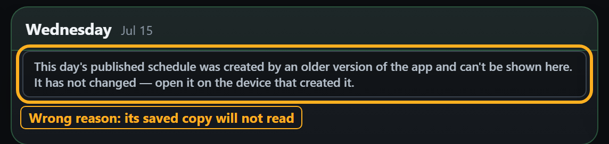<figcaption><span class="tag">Today</span>The notice on each day: the wrong reason</figcaption></figure>
      <figure>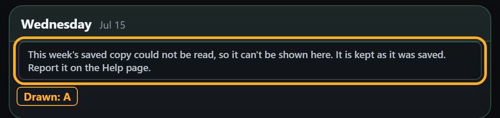<figcaption><span class="tag drawn">Drawn A</span>The notice, with what to do</figcaption></figure>
      <figure>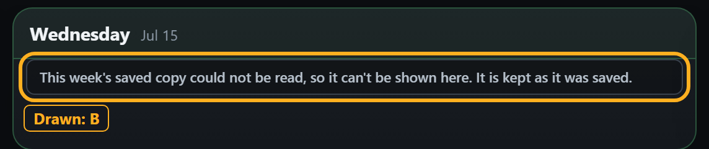<figcaption><span class="tag drawn">Drawn B</span>The notice, without the last step</figcaption></figure>
      <figure>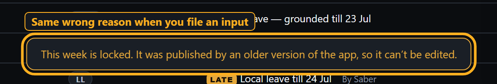<figcaption><span class="tag">Today</span>Saving Saint's Meeting: the amber note</figcaption></figure>
      <figure>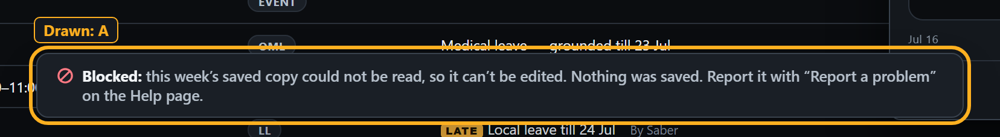<figcaption><span class="tag drawn">Drawn A</span>The refusal in the grey "Blocked" note (B the same without its last sentence)</figcaption></figure>
    </div>
    <div class="phones">
      <figure>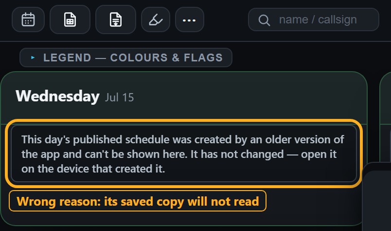<figcaption><span class="tag">Today</span>Phone: the notice</figcaption></figure>
      <figure>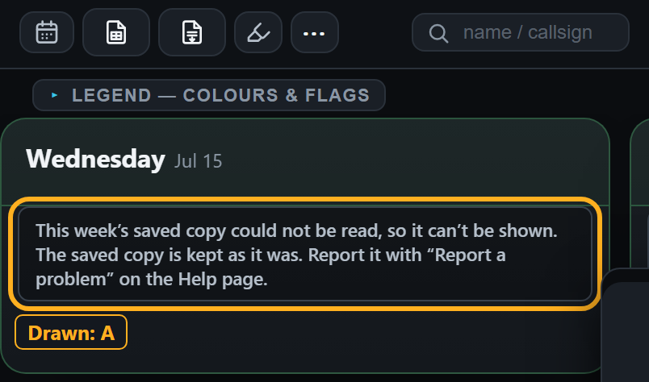<figcaption><span class="tag drawn">Drawn A</span>Phone: the notice</figcaption></figure>
    </div>
    <ul>
      <li><b>A, say what happened, that nothing is lost, and what to do.</b> The notice: <span class="say">“This week’s saved copy could not be read, so it can’t be shown. The saved copy is kept as it was. Report it with “Report a problem” on the Help page.”</span> The refusal, in the grey "Blocked" note every refusal of one change already wears, where today it is amber: <span class="say">“Blocked: this week’s saved copy could not be read, so it can’t be edited. Nothing was saved. Report it with “Report a problem” on the Help page.”</span></li>
      <li><b>B, the same without the last step.</b> The notice: <span class="say">“This week’s saved copy could not be read, so it can’t be shown. The saved copy is kept as it was.”</span> The refusal: <span class="say">“Blocked: this week’s saved copy could not be read, so it can’t be edited. Nothing was saved.”</span></li>
    </ul>
    <p>Both change the unreadable case only. A week truly published by an older version keeps its own reason, and with A its refusal would read <span class="say">“Blocked: this week was published by an older version of the app, so it can’t be edited. Nothing was saved. Report it with “Report a problem” on the Help page.”</span> (not pictured). <b>Your words kept despite a reader's catch:</b> "published by an older version of the app" are your approved words (14 Oct 26); a fresh reader suggested "with" in place of "by", and that is left for you. The Scheduler Board shows the same notice; it could not be pictured, as a damaged week has no button that opens the board, but the chosen words reach it too.</p>
    <div class="rec">
      <p><b>Recommended: A.</b> An error should say how to put it right, and the only thing a person can do here is tell a scheduler; "Report a problem" is how. B is one sentence shorter but leaves him with nothing to do: a fresh reader, given B alone, said "It leaves me with no next step, so I'd go and ask someone." Neither says "Ask an admin", which would send him to someone who cannot fix it.</p>
      <p>Rulings: none of yours change. The refusal's grey look carries out your "Blocked:" rulings (5, 6 and 7 Nov 26, D1667 to D1669) on one refusal their build left amber.</p>
    </div>
  </section>

  <section id="q7">
    <h2><span class="n">7</span>Where a day starts when nothing is entered</h2>
    <p>When a flyer's line has nothing entered (no in-time, no rally), should his long day and his Insights work hours start at the default rally, 3 hours before take-off, as his OIL already does and as the Logic page says, or at the step, 1 hour before take-off, as the app does today?</p>
    <p><b>Your ruling of 19 Oct 26, and why this is still asked.</b> That ruling (D1032) was your "4 yes" to "Does the R box count for OIL and the day's start exactly like a typed rally does today? … an empty box counts as its default". Its rule: "A formation's R box counts exactly as a typed rally did: the earliest applicable in-time or rally starts its report (with no in-time, the rally) for crew rest, OIL and the rest, where it is the man's first event; an empty box's default counts only where no in-time or rally is entered (D592)." (D592 there is your 5 Oct 26 rule that OIL counts from the earliest in-time or rally, the nominal time where none is typed.) Its full record adds that the long-day warning and work hours were named in the question you said yes to. Read plainly, that yes points to A. But this was found the same day, by the check of that same job, and that chat filed it as a question for you rather than reading your yes as the answer. So it is put to you as open: A carries the 19 Oct ruling out in full; B narrows it.</p>
    <p class="ex"><b>For example:</b> Saber puts Saint and Echo on a new line VL on Fri 17 Jul, take-off 12:00, landing 13:00, and types nothing else; the R box shows a faint 09:00. Today Insights counts Saint's Friday from 11:00, 16h30 for the week; if Saber then types 09:00, the time the box suggested, Saint jumps to 18h30. With A, Saint reads 18h30 whether or not Saber types it, and his OIL already counts from 09:00. With B, Saint stays 16h30, and the Logic page now says the hours count from step.</p>
    <div class="pair">
      <figure>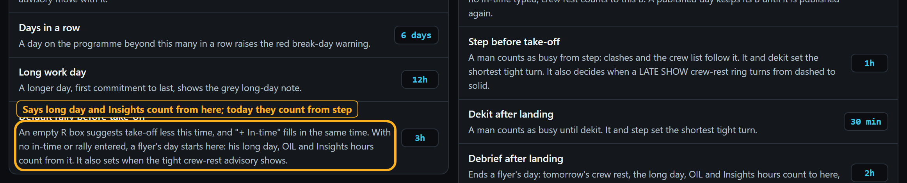<figcaption><span class="tag">Today</span>Logic says the day starts at the default rally; not so for the long day and Insights</figcaption></figure>
      <figure>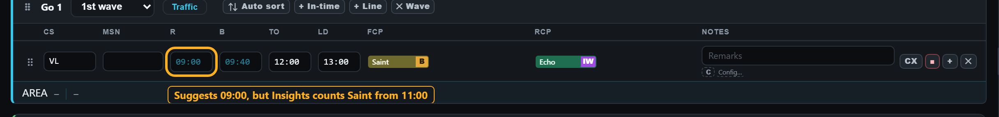<figcaption><span class="tag">Today</span>Fri 17 Jul, VL: the empty R box suggests 09:00</figcaption></figure>
      <figure>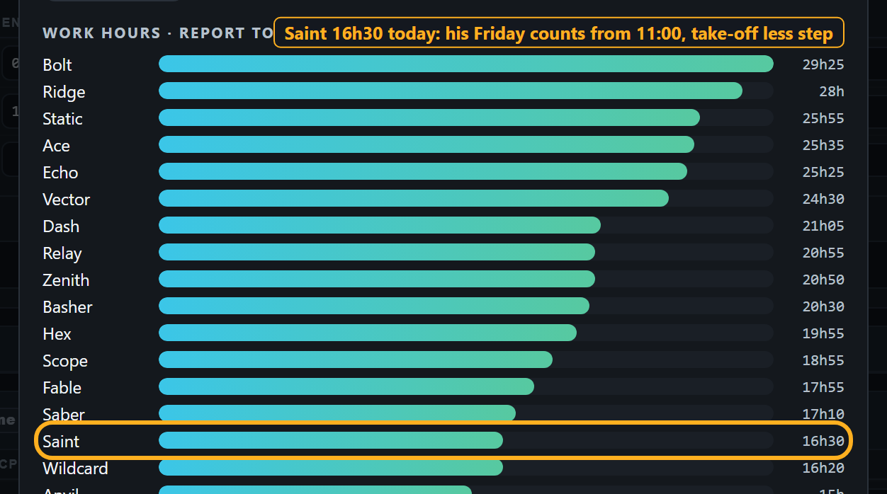<figcaption><span class="tag">Today</span>Insights: Saint 16h30, Echo 25h25, their Friday from 11:00</figcaption></figure>
      <figure>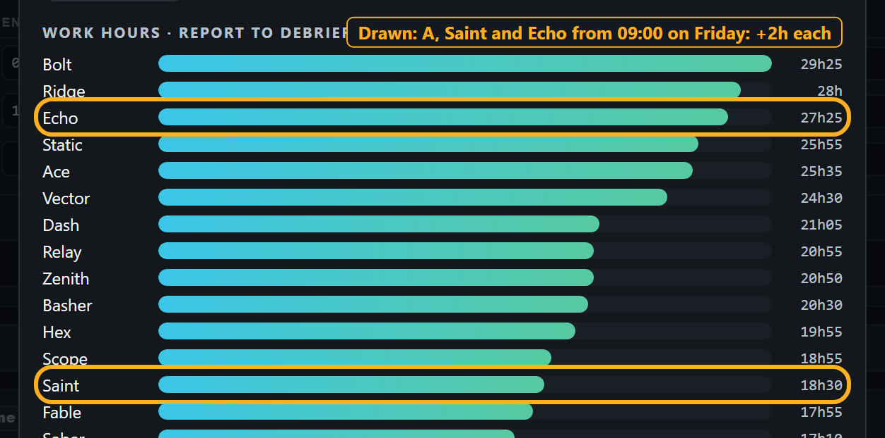<figcaption><span class="tag drawn">Drawn A</span>The whole week worked out: only Saint and Echo move, 2 hours each</figcaption></figure>
      <figure>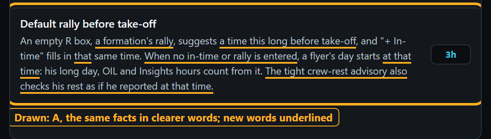<figcaption><span class="tag drawn">Drawn A</span>Logic's sentence in clearer words, the same facts (new words underlined)</figcaption></figure>
      <figure>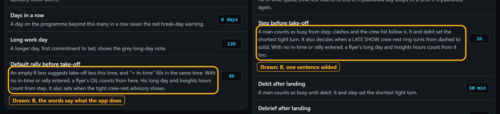<figcaption><span class="tag drawn">Drawn B</span>Logic's sentence says what the app does</figcaption></figure>
      <figure>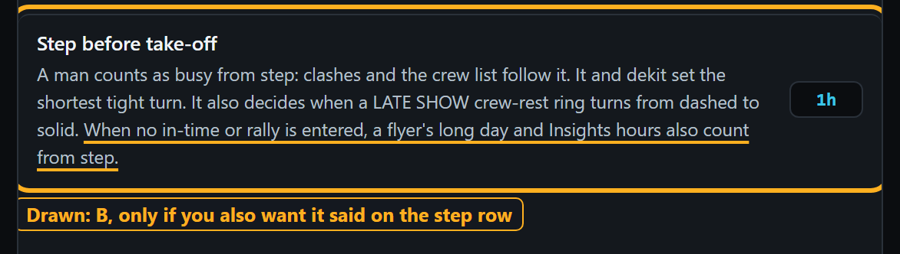<figcaption><span class="tag drawn">Drawn B</span>Only if you want it said on "Step before take-off" too</figcaption></figure>
    </div>
    <p class="lead">The same Logic pictures on the phone are kept in the project.</p>
    <ul>
      <li><b>A, the app changes: the long day and Insights count from the default rally.</b> A line with nothing entered starts the man's day at take-off less the default rally, for his long day and Insights hours as for his OIL. With today's settings such a flying day counts 2 hours longer in Insights, and the long-day note shows 2 hours sooner; changing the default rally on the Logic page then moves Insights at once. The Logic page's facts stay, now true; drawn in clearer words (today's words, kept word for word, also work under A): <span class="say">“An empty R box, a formation's rally, suggests a time this long before take-off, and "+ In-time" fills in that same time. When no in-time or rally is entered, a flyer's day starts at that time: his long day, OIL and Insights hours count from it. The tight crew-rest advisory also checks his rest as if he reported at that time.”</span> How the week was checked: every man's total counted as today matched Insights to the minute; of the week's 66 seats on flying lines only Saint's and Echo's, on the line made for this question, have nothing entered, so only they move, and nobody newly reaches the 12-hour long-day note. In a real week every man on such a line would move the same way.</li>
      <li><b>B, the words change; the app stays as it is.</b> "Default rally before take-off" reads: <span class="say">“An empty R box, a formation's rally, suggests a time this long before take-off, and "+ In-time" fills in that same time. When no in-time or rally is entered, a flyer's OIL counts from that time, but his long day and Insights hours count from step. The tight crew-rest advisory also checks his rest as if he reported at that time.”</span> Only if you want it said on both rows, "Step before take-off" gains at its end: <span class="say">“When no in-time or rally is entered, a flyer's long day and Insights hours also count from step.”</span></li>
    </ul>
    <div class="rec">
      <p><b>Recommended: A.</b> One start for a day with nothing entered, the same for OIL, the long day and the hours, as the Logic page already says and as you answered for the R box on 19 Oct. The faint 09:00 in the R box is what the scheduler sees as the start of the day; today, typing that very time adds 2 hours to the man's week, which nobody would expect from accepting a suggestion. With A, typing it changes nothing, and two starts become one, which leaves fewer places for a bug. B is cheaper but keeps a flyer's day starting at two times depending on what is counted; a fresh reader took B's first words for a contradiction. The cost of A: about 2 more hours a flying day in Insights where nothing is entered, more long-day notes on such days, and a change to the rules engine. In the demo week only the one line made for this question is touched.</p>
      <p>Rulings: A changes none of yours. It carries out your 19 Oct 26 ruling (D1032) and your 5 Oct 26 rule of one clock for OIL, the work-hours bar and the long-day warning (D592), and makes the Logic page's words true (15 Oct 26, D928, D932). Your rulings on the one default-rally setting (19 Oct 26, D1031) and on a Logic change moving Insights at once (1 Oct 26, D482) stand. B narrows the 19 Oct ruling for the long day and work hours, leaves the 5 Oct "one clock" untrue for a line with nothing entered, and changes the Logic words.</p>
    </div>
  </section>

  <h2 class="grp">The Inputs list</h2>

  <section id="q8">
    <h2><span class="n">8</span>+ Input on the right</h2>
    <p>On a desktop, should "+ Input" on the Inputs list move to the right end of its row, with the list making room while its window is open, as "+ Medical" already does on the Medical tab? Today "+ Input" stands first at the left, beside the dates button; its "New input" window opens at the right and covers the end of Remarks, the documents column and Changed, and the list does not make room. On the phone both buttons stand first at the left and a window stands in the middle, so neither option changes the phone.</p>
    <p class="ex"><b>For example:</b> on your PC Saber opens the Inputs list (13 Jul → 27 Jul) and presses "+ Input" to file OL for Cobra on 15 Jul. Today the button is at the left, the window opens at the right and hides the end of the remarks, the documents column and the Changed dates, so Cobra's new row arrives with half its line under the window. With A the button is at the right end, the list pulls in beside the window, and Cobra's new row shows whole, ringed for a few seconds.</p>
    <div class="pair">
      <figure>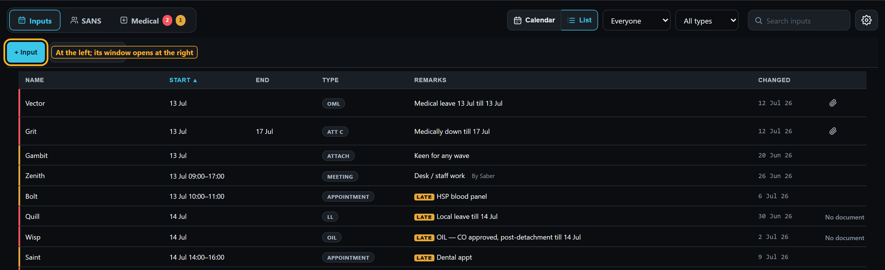<figcaption><span class="tag">Today</span>"+ Input" at the row's left, beside the dates button</figcaption></figure>
      <figure>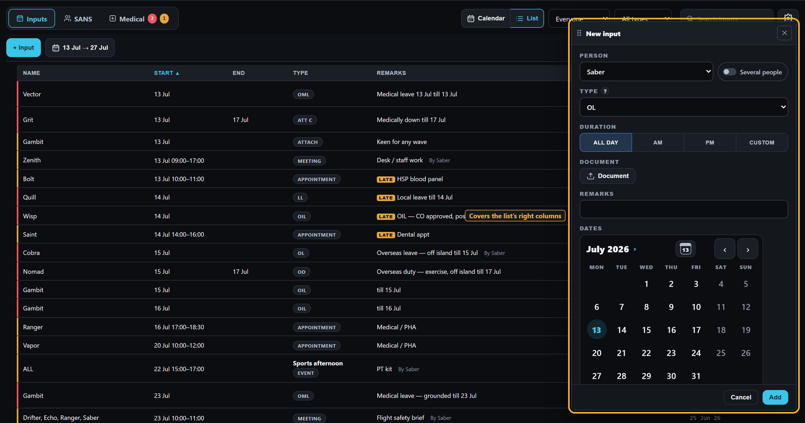<figcaption><span class="tag">Today</span>Its window covers the list's right columns</figcaption></figure>
      <figure><figcaption><span class="tag">Today</span>Medical: "+ Medical" at the right, as you ruled</figcaption></figure>
      <figure><figcaption><span class="tag">Today</span>Medical: the cards make room for the window</figcaption></figure>
      <figure><figcaption><span class="tag drawn">Drawn A</span>"+ Input" at the right end, as "+ Medical" stands</figcaption></figure>
      <figure><figcaption><span class="tag drawn">Drawn A</span>The window open: the list pulled in, every column in view</figcaption></figure>
    </div>
    <div class="phones">
      <figure><figcaption><span class="tag">Today</span>Phone: "+ Input" first, unchanged</figcaption></figure>
      <figure><figcaption><span class="tag">Today</span>Phone: "+ Medical" first, unchanged</figcaption></figure>
    </div>
    <ul>
      <li><b>A, move it, as the Medical tab.</b> On a desktop "+ Input" stands at the right end of its row (the dates button stays at the left); while its window is open the list makes room on the right, so every column stays in view and a new input's row is seen arriving with the just-added ring. The phone is unchanged. No new words and no new look. Its cost: pulled in beside the window, Remarks narrows to about 190 px, so a longer remark wraps onto two lines (Vector, Wisp, Cobra, Nomad in the picture), while Name and Start keep wide empty columns; the build would let Name and Start give up room first.</li>
      <li><b>B, leave it.</b> The window keeps covering the right columns, and the Inputs page's two "+" buttons stand on opposite sides on a desktop.</li>
    </ul>
    <div class="rec">
      <p><b>Recommended: A.</b> The window opens at the right, so the button that opens it stands there, and the list moves aside so what is added is seen landing. The Inputs page's two "+" buttons then behave alike on a desktop. The costs: this one button stands left on a phone and right on a desktop, as you already accepted for "+ Medical", and a narrower Remarks column while the window is open.</p>
      <p>Rulings: A carries out your design lesson of 24 Oct 26 that an add button stands where its window opens (D1300), which names "+ Input" as the next place, and keeps "+ Medical" standing where "+ Input" stands (21 Oct 26, D1137). It changes your 10 Oct 26 drawing of "+ Input" beside the dates button, on the desktop only (D729), and sets aside for this button your 21 Oct 26 lesson that a button stands in the same place on a phone as on a desktop (D1188). The buttons stay 36 tall (21 Oct 26, D1139).</p>
    </div>
  </section>

  <h2 class="grp">The Leave War</h2>

  <section id="q9">
    <h2><span class="n">9</span>More names below</h2>
    <p>You asked on 24 Oct 26 for the Leave War's day window to say when more is below its foot. Which look should that "↓ 8 more" line take: the bell's own "more" line (A), which only says how many, or the History bubble's "more" button (B), which can be tapped? Today nothing says so: Mon 30 Nov, "AWAY · 19", your phone shows 12 lines whole, a 13th cut at the foot and 6 wholly below.</p>
    <p>The number counts the lines not wholly in view (the one cut at the foot plus every line below it), as the bell already counts.</p>
    <p class="ex"><b>For example:</b> Saber taps Mon 30 Nov's date on his iPhone, a day 19 men are away. Today the window lists twelve, the thirteenth cut at its foot, and nothing tells him seven more are below. With A the foot reads "↓ 8 more"; one push of the list makes it "↓ 5 more"; at the end, Trident's line last, the cue is gone. With B the foot reads "↓ 9 more", and a tap on it takes him to the end. The Inputs calendar's 30 Nov reads "↓ 8 more" with A.</p>
    <div class="phones">
      <figure><figcaption><span class="tag">Today</span>12 of 19 in view, no sign of 7 more</figcaption></figure>
      <figure><figcaption><span class="tag drawn">Drawn A</span>The bell's foot: "↓ 8 more"</figcaption></figure>
      <figure><figcaption><span class="tag drawn">Drawn A</span>Part way down: "↓ 5 more"</figcaption></figure>
      <figure><figcaption><span class="tag drawn">Drawn B</span>The History button: "↓ 9 more", one line fewer shows</figcaption></figure>
      <figure><figcaption><span class="tag drawn">Drawn A</span>The Inputs calendar's 30 Nov: the same cue</figcaption></figure>
    </div>
    <div class="pair">
      <figure><figcaption><span class="tag">Today</span>Your PC: 18 of 19 in view, Trident cut</figcaption></figure>
      <figure><figcaption><span class="tag drawn">Drawn A</span>Your PC: "↓ 2 more"</figcaption></figure>
      <figure><figcaption><span class="tag drawn">Drawn B</span>Your PC: "↓ 3 more"</figcaption></figure>
    </div>
    <p class="lead">Kept in the project: each at the list's end, where the cue is gone; B part way down; the Inputs calendar's day today.</p>
    <ul>
      <li><b>A, the bell's own foot.</b> Under the list, outside it, so it covers no line: a hairline above, and "↓ 8 more" in small grey letters at the left, copied whole from the bell. It only says how many, as the bell does: it is not pressable, so it has nothing to look pressable. It goes at the list's end; you scroll the list as today.</li>
      <li><b>B, the History bubble's "more" button.</b> A full-width button across the window's foot, the words in the accent blue, bold. A tap moves the list down by what is in view, less one line; one tap from the top reaches the end, on the phone and the desktop. It takes more height, so one fewer line shows, and it is a second look for a cue the bell shows as A.</li>
    </ul>
    <p>"↓ 8 more" is your own wording (24 Oct 26). One answer can serve every list in a window that runs past its foot: the Leave War's day and the Inputs calendar's day (pictured), the SANS calendar's day, the ALL AVAIL window and the changes window. The bell already has A.</p>
    <div class="rec">
      <p><b>Recommended: A.</b> It is already the app's look for this exact cue, in the bell, so the app has one cue that reads and behaves the same everywhere. It sits outside the list, hides the least, and says only what the screen does not. On a phone, scrolling the list is what you already do; the cue only tells you to. B is the choice if you want a tap to do the scrolling for you.</p>
      <p>Rulings: neither changes your words of 24 Oct 26 (D1295). Both settle two of my readings of it, which change: the count is of lines not wholly in view, not "wholly out of view" (counted that way the cue would say "↓ 0 more" while the last line still shows half, then go before the list's end, where your words say it goes at the end); and "a tap on the cue scrolls the list down" was my reading, not your words. A drops the tap; B keeps it with a pressable look, as your 21 Oct 26 lesson asks of anything that acts when tapped. Whichever you pick, the bell's cue follows it.</p>
    </div>
  </section>

  <section id="q10">
    <h2><span class="n">10</span>The dates row blink</h2>
    <p>When the Leave War grid's dates row scrolls up under the top bar, its pinned copy arrives one frame late, so for that moment the dates are cut or missing. Fix it, or leave it? A frame is about a sixtieth of a second. On your PC, a turn of the mouse wheel shows one or two frames with the row half under the top bar, its weekday names gone, and no pinned copy. At your phone's size a quick push shows two wrong frames: one with the row cut, the next with no dates row at all. It has been there since at least 23 Sep 26. The Quals page pins its header the same way (not pictured).</p>
    <p class="ex"><b>For example:</b> on his PC, Saber opens the Leave War on November and turns the mouse wheel twice. For one frame the weekday names (SAT, SUN, MON …) vanish under the top bar and only the date numbers show, then the pinned dates bar appears. On his iPhone, a quick push up shows a frame with the dates row cut, then a frame with no dates row at all, then the bar. With A the dates stay in place throughout.</p>
    <div class="pair">
      <figure><figcaption><span class="tag">Today</span>Your PC, three frames in order: frame 2 (ringed) has the row half under the bar and no pinned copy</figcaption></figure>
    </div>
    <div class="phones">
      <figure><figcaption><span class="tag">Today</span>Phone size, a quick push: frames 2 and 3 (ringed) show the row cut, then none. A test browser at your iPhone's size, not Safari on your iPhone</figcaption></figure>
    </div>
    <ul>
      <li><b>A, fix it.</b> The pinned bar takes the row's place in the same frame the row reaches the top bar, on a desktop and on a phone, and Quals' header the same. No new words; nothing new to see except the blink gone.</li>
      <li><b>B, leave it.</b> A flash of one or two frames, under a twentieth of a second; the item closes.</li>
    </ul>
    <div class="rec">
      <p><b>Recommended: A, as a small Leave War job with its own speed check.</b> The flash is short, but it shows on the phone too, where it is two frames and once has no dates at all, and it sits on the one thing you do most on the grid, scrolling. The risk is speed: the obvious fix redraws more of the grid as you scroll, so the build measures the frames before and after, at both sizes, and stops if scrolling gets slower. Whether your iPhone draws 60 or 120 frames a second is not known. If you never see it, B is a fair answer.</p>
      <p>Rulings: neither changes one. A follows your rule that a scroll runs as smoothly as the phone allows (18 Oct 26, D991) and the spirit of your rule that a pinned bar shows the right thing at every scroll position (29 Oct 26, D1518).</p>
    </div>
  </section>

  <h2 class="grp">The Tracker</h2>

  <section id="q11">
    <h2><span class="n">11</span>The Tracker's marking pop-up</h2>
    <p>When you tap an event in the middle of the Tracker's chart on your phone, how should its marking window open so it covers neither the bars at the top nor the event itself? Today it opens upward over the top bar's Undo, Redo and bell, the Tracker bar, the Flow chart / Info / Show All tabs and the top of the event. It is the normal case, not a corner: every Find and every crew pick lands its event in the band where this happens. On a desktop the same.</p>
    <p class="ex"><b>For example:</b> Saber types ACG-09 into Find on his phone and taps the ball where the chart lands it. Today the marking window opens upward over Undo, Redo and the bell, the Tracker bar and the Flow chart / Info / Show All tabs, and covers the top of ACG-09. With A the chart glides ACG-09 up to just under the tabs and the window opens below it, Not done at the top and Edit details at the foot; he marks DCO and taps Close, and the chart stays where it glided to.</p>
    <div class="phones">
      <figure><figcaption><span class="tag">Today</span>It covers the top bar, the Tracker bar and the tabs</figcaption></figure>
      <figure><figcaption><span class="tag drawn">Drawn A</span>ACG-09 slid up under the tabs; the window whole below it</figcaption></figure>
      <figure><figcaption><span class="tag drawn">Drawn B</span>Nothing moves; the window cut at "Fails", scrolling inside</figcaption></figure>
    </div>
    <div class="pair">
      <figure><figcaption><span class="tag">Today</span>Your PC: over the page names and the Tracker bar too</figcaption></figure>
    </div>
    <ul>
      <li><b>A, the chart slides the event up under the tabs, and the window opens whole below it.</b> Only when the window would not fit below; the slide is the chart's own smooth scroll, only as far as needed (here 232 px), and the chart stays there after Close. On a desktop the same, under the Tracker bar. Where the event is too near the chart's end to slide, it falls back to B.</li>
      <li><b>B, nothing moves; the window is held between the tabs and the event, and its lower part scrolls inside it.</b> You see 242 of its 429 px: the grades, Done on and Fails. Failed on, the event's details and Edit details need a scroll inside the window, with only the cut-off edge to say so.</li>
    </ul>
    <p>No new words in either. Not drawn: the window held under the tabs at full height, which would sit on top of the event.</p>
    <div class="rec">
      <p><b>Recommended: A.</b> It is the only one where the bars, the tabs and the event all stay in view and the whole window shows; it matches how the Leave War already moves its grid for its window, so the app behaves one way; and nothing is hidden behind a scroll you have to guess at. B is the cheaper build but leaves half the window out of sight on every Find.</p>
      <p>Rulings: neither changes one. A follows your 24 Oct 26 ruling that the Leave War's grid scrolls the picked days into view above their window (D1290) and your lesson of that day that a window never hides what it is about. Your 17 Oct 26 rule on where Find lands an event (D984) is unchanged: the slide comes only when the window opens.</p>
    </div>
  </section>

  <section id="q12">
    <h2><span class="n">12</span>The Tracker's Find ✕</h2>
    <p>On your phone, what should the ✕ in the Tracker's Find strip do: only empty the box, as today, or also put Find away so the tabs come back? Find opens as a strip over the Flow chart / Info / Show All tabs, the keyboard up. Today ✕ empties the box and puts the keyboard straight back up, and the strip stays. 🔍 again or a tap outside puts it away; picking a match from the list does too, by accident. This is how Find shows on any screen up to 1050 wide; on your PC Find is a box in the Tracker bar, covers nothing, and its ✕ stays as it is.</p>
    <p class="ex"><b>For example:</b> Saber taps 🔍, types ACG-09 and presses Enter: the chart lands ACG-09. He taps ✕ to finish. Today the box empties, the keyboard jumps back up and the strip still hides Flow chart, Info and Show All; he has to tap 🔍 again or tap the chart. With A that one ✕ empties the box, the keyboard goes down and the tabs are back.</p>
    <div class="phones">
      <figure><figcaption><span class="tag">Today</span>Find sits over the three tabs</figcaption></figure>
      <figure><figcaption><span class="tag">Today</span>After ✕: the box empty, the strip still there. The keyboard coming back cannot be shown</figcaption></figure>
      <figure><figcaption><span class="tag drawn">Drawn A</span>One ✕: Find away, the tabs back</figcaption></figure>
      <figure><figcaption><span class="tag drawn">Drawn C</span>Find opens under the tabs, over the chart's top</figcaption></figure>
    </div>
    <ul>
      <li><b>A, ✕ empties the box and puts Find away</b> (the keyboard down, the tabs back), as Escape does. Its hover words there: <span class="say">“Clear the search and close Find”</span> (today "Clear the search"). A pick from the list puts it away on purpose. On your PC nothing changes.</li>
      <li><b>B, ✕ twice:</b> the first tap empties the box, as today; a tap on the empty box's ✕ puts Find away. Its words: "Clear the search", then <span class="say">“Close Find”</span>. Not drawn: the second state looks like A's.</li>
      <li><b>C, Find opens under the tabs</b>, over the top 40 px of the chart; ✕ as today. The tabs stay reachable, but the strip still needs 🔍 or a tap outside to go, and the keyboard still comes back after ✕.</li>
    </ul>
    <div class="rec">
      <p><b>Recommended: A.</b> On a phone a ✕ on a strip that slid out means "done with this", and A makes it do that in one tap; it matches Escape and a pick, so every way of finishing ends the same; and the tabs are covered only while you are finding, when you do not need them. B costs a second tap for the same end; C moves the cover from the tabs to the chart and leaves the ✕ doing half a job.</p>
      <p>Rulings: none change. Each keeps the ✕ in the search box, as your 21 Oct 26 ruling on search boxes has it (D1127).</p>
    </div>
  </section>

  <h2 class="grp">The typed marks</h2>

  <section id="q13">
    <h2><span class="n">13</span>The last typed marks</h2>
    <p>Should these four typed marks become the app's drawn line marks, as drawn: (a) the 👁 on a look at a published version, (b) the Inputs calendar's ⤢ / ⤡, (c) the Tracker's ↺ Restore, and (d) the ↺ on a hidden warning? Round 4, now live, drew the board's, the Leave War's and the Tracker's tools but not these.</p>
    <p class="ex"><b>For example:</b> on Edit Schedule Saber hides the clash warning on his own line (OPS SHARING + NAV SYS BRIEF &amp; VL BFM): today its line stays, struck through, with a typed ↺ at its end; with A the ↺ is the same drawn arrow as the Leave War's Reset order, and a tap still flags it again. On the same page he looks at Monday's Original: today the selector reads "👁 Original" with a coloured emoji on his iPhone; with A a grey line eye.</p>
    <h3>(a) The eye on a published version's look</h3>
    <div class="pair">
      <figure><figcaption><span class="tag">Today</span>Phone, Edit Schedule: "👁 Original". The test browser draws 👁 plain, so a PC's colour eye stands in; your iPhone draws its own (open Monday's Original to see it)</figcaption></figure>
      <figure><figcaption><span class="tag drawn">Drawn A</span>The app's own line eye, from the wave templates window</figcaption></figure>
    </div>
    <h3>(b) The Inputs calendar's last button</h3>
    <div class="pair">
      <figure><figcaption><span class="tag">Today</span>Pressed: typed ⤡, "Show the month compact", pointing out</figcaption></figure>
      <figure><figcaption><span class="tag drawn">Drawn A</span>Pressed: two arrows pointing in</figcaption></figure>
    </div>
    <h3>(c) The Tracker's Restore</h3>
    <div class="pair">
      <figure><figcaption><span class="tag">Today</span>Syllabus order, "Tx 2026" deleted: typed ↺ Restore</figcaption></figure>
      <figure><figcaption><span class="tag drawn">Drawn A</span>The Reset arrow before "Restore"</figcaption></figure>
    </div>
    <h3>(d) A hidden warning's ↺</h3>
    <div class="phones">
      <figure><figcaption><span class="tag">Today</span>Board, phone: typed ↺ flags it again, ✕ hides it</figcaption></figure>
      <figure><figcaption><span class="tag drawn">Drawn A</span>The hidden line's arrow becomes the Reset arrow; ✕ stays</figcaption></figure>
      <figure><figcaption><span class="tag drawn">Side by side</span>History's clock and the drawn arrow, at the same scale</figcaption></figure>
    </div>
    <p class="lead">Kept in the project: each on your PC and on the board, (b) at rest, and History's clock on each page.</p>
    <ul>
      <li><b>A, all four as drawn.</b> (a) The line eye the app already draws in the wave templates window. (b) Two new marks in the app's line style, two arrows pointing out for "Show every input" and two arrows pointing in for "Show the month compact": a departure named, since today's ⤡ points out on the other slant and says nothing of "smaller". (c) and (d) The Reset arrow, the arrow turning back that already means "put back" on the Leave War's Reset order and the Tracker's Reset layout. The ✕ stays typed: it is the app's close-and-remove mark in over a hundred places.</li>
      <li><b>B, the first three as drawn, and the warning's ↺ left typed.</b> The caution: History's clock is that same arrow turning back with clock hands added, and it stands on the top bar of both pages with the warning lists.</li>
    </ul>
    <p>No new words: every button keeps its words and its hover words.</p>
    <div class="rec">
      <p><b>Recommended: A.</b> One mark, one meaning everywhere: the arrow turning back already means "put back" in two places, and Flag this again is a put-back. Side by side, History's clock reads apart by its hands, its white, its full button and its place on the top bar; the drawn arrow is smaller, grey, on a struck-through line. The eye is a mark the app draws already, so it looks the same on your iPhone as on a PC, which a typed 👁 does not. B is right if you find the two in the side-by-side picture hard to tell apart.</p>
      <p>Rulings: A carries your 5 Nov 26 line icons (D1703, D1705) and your 21 Oct 26 "one thing, one look" (D1124) to these four. For (d) it relies on your 5 Nov 26 ruling that any new mark a person could mistake for another on its page is redrawn before it is built (D1700), with the reading told to you then: the Reset arrow is History's arrow without the clock and means "put back" wherever it stands, kept unless you say otherwise. If you find them easy to tell apart, A changes no ruling; if not, that ruling says the warning's arrow is not built, which is B.</p>
    </div>
  </section>

  <section id="q14">
    <h2><span class="n">14</span>The phone day bar's marks</h2>
    <p>On your phone, should the Scheduler Board's day bar show the same marks before Templates and OIL Earn as the desktop does? Round 4 gave the desktop's two their marks, a page of blocks and a ticket. The phone's bar, "THIS DAY · Templates · OIL Earn", is a separate bar that drawing never reached, so it kept its words alone.</p>
    <p class="ex"><b>For example:</b> Saber opens Monday on the board on his phone. Today the day bar reads THIS DAY, Templates, OIL Earn in words alone, while on his PC the same two buttons wear a page of blocks and a ticket. With A his phone shows the same two marks, the row still one line with room to spare.</p>
    <div class="pair">
      <figure><figcaption><span class="tag">Today</span>Your PC: the two wear their marks</figcaption></figure>
      <figure><figcaption><span class="tag">Today</span>Phone: words alone</figcaption></figure>
      <figure><figcaption><span class="tag drawn">Drawn A</span>Phone: the same marks, still one row</figcaption></figure>
      <figure><figcaption><span class="tag drawn">Drawn A</span>Every letter a seventh wider, as an iPhone draws them: still one row</figcaption></figure>
    </div>
    <ul>
      <li><b>A, the desktop's marks on the phone too.</b> 74 px still free on the row; with an iPhone's wider letters, 49 px; one row either way. The buttons keep their height, so nothing moves. No new words.</li>
      <li><b>B, leave the phone's words alone</b>, as built: the same two buttons look two ways on the two sizes.</li>
    </ul>
    <p>"Nothing today earns" on that bar, once OIL Earn is on, is question 3.</p>
    <div class="rec">
      <p><b>Recommended: A.</b> The same button looks the same on both sizes, and it fits on one row even with your iPhone's wider letters, so it costs the phone nothing.</p>
      <p>Rulings: A extends your 5 Nov 26 marks for Templates and OIL Earn (D1703, D1704) to the phone's bar, which their drawing left out. B keeps them as drawn.</p>
    </div>
  </section>
</main>
<script>
document.addEventListener('click', e => {
  const z = document.querySelector('.zoom')
  if (z) { z.remove(); return }
  const img = e.target.closest('figure img'); if (!img) return
  const d = document.createElement('div'); d.className = 'zoom'
  const big = document.createElement('img'); big.src = img.src; big.alt = img.alt
  d.appendChild(big); document.body.appendChild(d)
})
document.addEventListener('keydown', e => { if (e.key === 'Escape') document.querySelector('.zoom')?.remove() })
</script>
